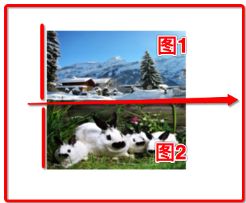

//创建队列组
dispatch_group_tgroup =dispatch_group_create();
//1.开子线程下载图片
//创建队列(并发)
dispatch_queue_tqueue =dispatch_get_global_queue(0,0);
//异步执行并发队列
dispatch_group_async(group, queue, ^{
//1.获取url地址
NSURL*url = [NSURL URLWithString:@"https://imgsa.baidu.com/baike/c0=baike180,5,5,180,60/sign=b531c24482025aafc73f76999a84c001/b21c8701a18b87d6435d2f9b070828381f30fd13.jpg"];
//2.下载图片
NSData *data = [NSData dataWithContentsOfURL:url];
//3.把二进制数据转换成图片
self.image1= [UIImage imageWithData:data];
});
//下载图片2
dispatch_group_async(group, queue, ^{
//1.获取url地址
NSURL*url = [NSURL URLWithString:@"https://imgsa.baidu.com/baike/c0=baike220,5,5,220,73/sign=62c273b38a13632701e0ca61f0e6cb89/8644ebf81a4c510faae40d756059252dd42aa5b9.jpg"];
//2.下载图片
NSData*data = [NSData dataWithContentsOfURL:url];
//3.把二进制数据转换成图片
self.image2= [UIImage imageWithData:data];
});
//合成
dispatch_group_notify(group, queue, ^{
//开启图形上下文
UIGraphicsBeginImageContext(CGSizeMake(200,200));
//画1
[self.image1 drawInRect:CGRectMake(0,0,200,100)];
//画2
[self.image2 drawInRect:CGRectMake(0,100,200,100)];
//根据图形上下文拿到图片
UIImage*image =UIGraphicsGetImageFromCurrentImageContext();
//关闭上下文
UIGraphicsEndImageContext();
dispatch_async(dispatch_get_main_queue(), ^{
self.imageView.image= image;
});